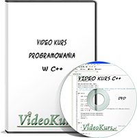

armiksos@gmail.com

Czym są Video Kursy?
Video Kurs jest to wideo obrazujące ekran monitora z lektorem w tle, który tłumaczy poruszone zagadnienia. Wideo te jest zapisane w formacie .avi lub .mp4 i jest bardzo wysokiej jakości. Dlaczego warto oglądać nasze Video Kursy?
Oszczędzasz czas!
Wyobraź sobie przed sobą książkę... książka ta ma około 1000 stron, jest gruba... ile zajmie Ci czytanie takiej książki? 20h... 30h... może więcej? Czy będzie to ciekawe, czy też monotonne? No dobrze... załóżmy, że jakoś Ci się udało ją przeczytać, ale co z tego? Teraz musisz wszystko po kolei analizować, wtedy czas czytania wzrasta do nawet 60h!
Teraz masz przed sobą Video Kurs, który trwa np. 7h. Oglądając go nie nudzisz się, bo lektor jest osobą, która często powie coś zabawnego :). Łączysz przyjemne z pożytecznym! Dodatkowo nie musisz siedzieć później i wałkować jakąś niezrozumiałą stronę godzinami. W kursie masz wszystko wytłumaczone, ponieważ lektor nie tylko wykłada teorie, pokazuje wszystko na praktycznych przykładach. Traktuje osobę oglądającą jako jej bliski kolega! Poczuj się tak jakbyś miał koło siebie korepetytora, który jest Twoim przyjacielem!
Teraz masz przed sobą Video Kurs, który trwa np. 7h. Oglądając go nie nudzisz się, bo lektor jest osobą, która często powie coś zabawnego :). Łączysz przyjemne z pożytecznym! Dodatkowo nie musisz siedzieć później i wałkować jakąś niezrozumiałą stronę godzinami. W kursie masz wszystko wytłumaczone, ponieważ lektor nie tylko wykłada teorie, pokazuje wszystko na praktycznych przykładach. Traktuje osobę oglądającą jako jej bliski kolega! Poczuj się tak jakbyś miał koło siebie korepetytora, który jest Twoim przyjacielem!
Teraz masz przed sobą Video Kurs, który trwa np. 7h. Oglądając go nie nudzisz się, bo lektor jest osobą, która często powie coś zabawnego :). Łączysz przyjemne z pożytecznym! Dodatkowo nie musisz siedzieć później i wałkować jakąś niezrozumiałą stronę godzinami. W kursie masz wszystko wytłumaczone, ponieważ lektor nie tylko wykłada teorie, pokazuje wszystko na praktycznych przykładach. Traktuje osobę oglądającą jako jej bliski kolega! Poczuj się tak jakbyś miał koło siebie korepetytora, który jest Twoim przyjacielem!
Teraz masz przed sobą Video Kurs, który trwa np. 7h. Oglądając go nie nudzisz się, bo lektor jest osobą, która często powie coś zabawnego :). Łączysz przyjemne z pożytecznym! Dodatkowo nie musisz siedzieć później i wałkować jakąś niezrozumiałą stronę godzinami. W kursie masz wszystko wytłumaczone, ponieważ lektor nie tylko wykłada teorie, pokazuje wszystko na praktycznych przykładach. Traktuje osobę oglądającą jako jej bliski kolega! Poczuj się tak jakbyś miał koło siebie korepetytora, który jest Twoim przyjacielem!
Teraz masz przed sobą Video Kurs, który trwa np. 7h. Oglądając go nie nudzisz się, bo lektor jest osobą, która często powie coś zabawnego :). Łączysz przyjemne z pożytecznym! Dodatkowo nie musisz siedzieć później i wałkować jakąś niezrozumiałą stronę godzinami. W kursie masz wszystko wytłumaczone, ponieważ lektor nie tylko wykłada teorie, pokazuje wszystko na praktycznych przykładach. Traktuje osobę oglądającą jako jej bliski kolega! Poczuj się tak jakbyś miał koło siebie korepetytora, który jest Twoim przyjacielem!